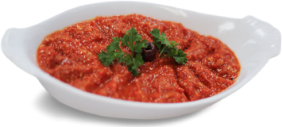

Acuka, biber salçası ve cevizin zeytinyağı, sarımsak ve baharatlarla birleştiği, Gaziantep mutfağından gelen acılı bir ezmedir. Bu tarifte cevizin yağlarını ve sarımsağın aktif bileşenlerini korumak için ısıl işlem sadece salçanın kavrulmasıyla sınırlı tutulur; karışım sonrasında dinlendirilerek aromaların birbirine kenetlenmesi sağlanır.